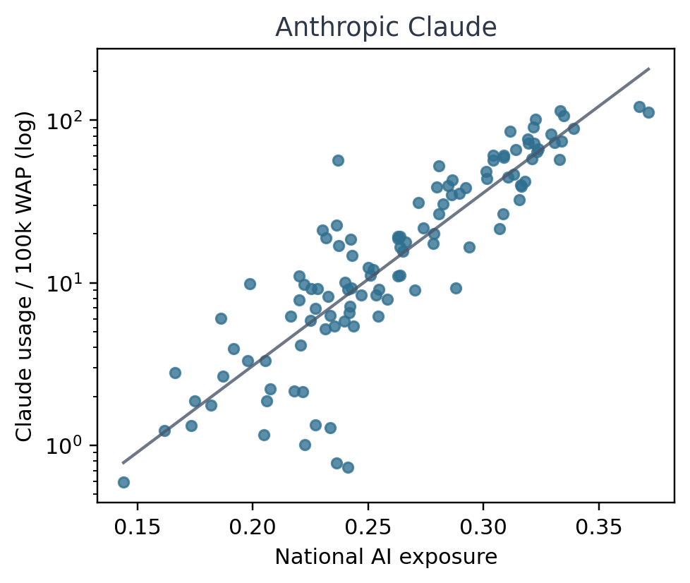
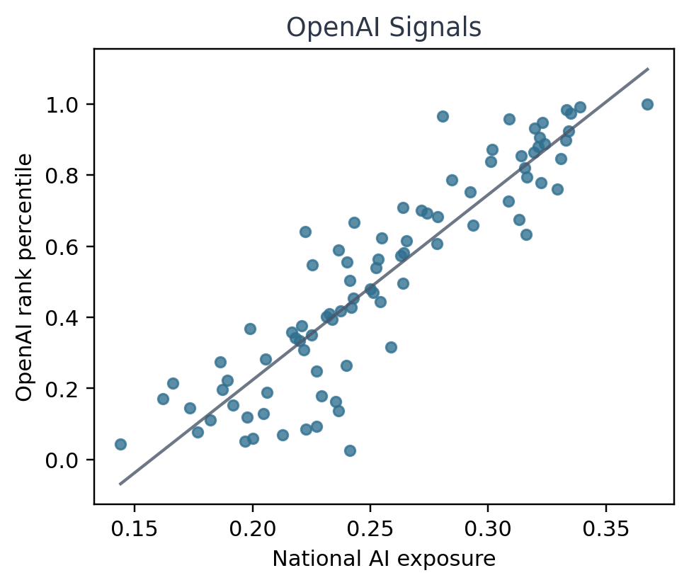
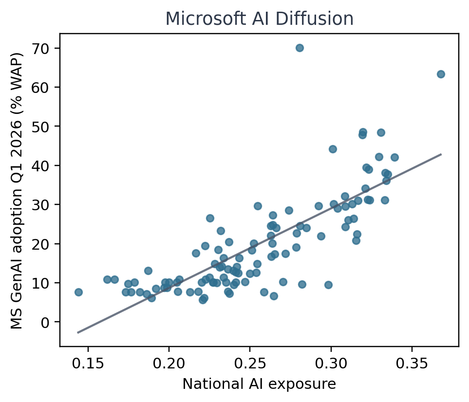

The Jagged Global Economy
Frontier AI Unevenly Exposes National Economies
We combine occupation-level frontier AI exposure scores with international employment data to estimate structural AI exposure for 141 national labor markets. The measure asks where existing work is concentrated in tasks frontier AI can already accelerate or transform. It is an exposure map, not a forecast of adoption, wages, or net employment losses.
National AI Exposure
Darker countries have labor markets more concentrated in occupations exposed to frontier AI. Click a country to inspect the occupation groups that contribute most to its national exposure score.

Key Findings
- Exposure is regionally uneven because workforces differ. Europe & Central Asia are 50% more exposed than Sub-Saharan Africa, and white-collar employment share strongly predicts national exposure.
- Women are more exposed than men in 91% of studied countries. The gender gap reflects where men and women work, especially women's concentration in white-collar and sales occupations.
- Exposure predicts observed AI adoption. National exposure aligns with usage measures published by Anthropic, OpenAI, and Microsoft, despite differences in each source's metric.
- Remittances create an indirect exposure channel. Countries that depend on income earned abroad can inherit exposure from the labor markets where migrant workers earn remittance income.
Explaining Exposure
White-collar employment share is a strong structural predictor of national AI exposure. The relationship helps explain why richer regions tend to be more exposed, while keeping the mechanism grounded in labor composition rather than income alone.

Predicting AI Adoption
National AI exposure predicts adoption statistics from Anthropic, OpenAI, and Microsoft, even though the three organizations publish different types of country-level usage measures. The Anthropic panel uses a log-spaced y-axis. Sources: Anthropic Economic Index, OpenAI Signals, and Microsoft AI Economy Institute.



Indirect Exposure Through Remittances
Remittances can transmit exposure across borders when income is earned in one labor market and spent in another. Tajikistan's direct exposure is 0.222, but its remittance-accounted exposure rises to 0.300 with remittances equal to 47.9% of GDP. Guatemala, Honduras, and El Salvador all receive more than 82% of covered bilateral remittance inflows from the United States, a higher-exposure sender in this analysis.

Citation
@article{murugan2026jagged,
title={The Jagged Global Economy: Frontier AI Unevenly Exposes National Economies},
author={Murugan, Arul and Aguirre, Tomás and Nagaraj, Abhishek and Bommasani, Rishi},
year={2026},
note={Preprint}
}